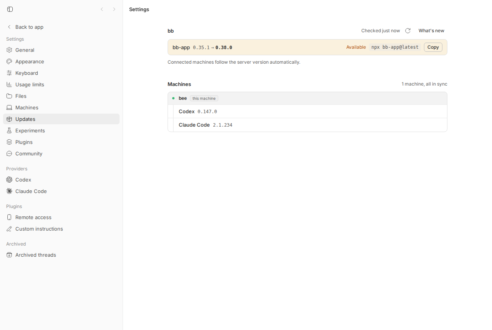
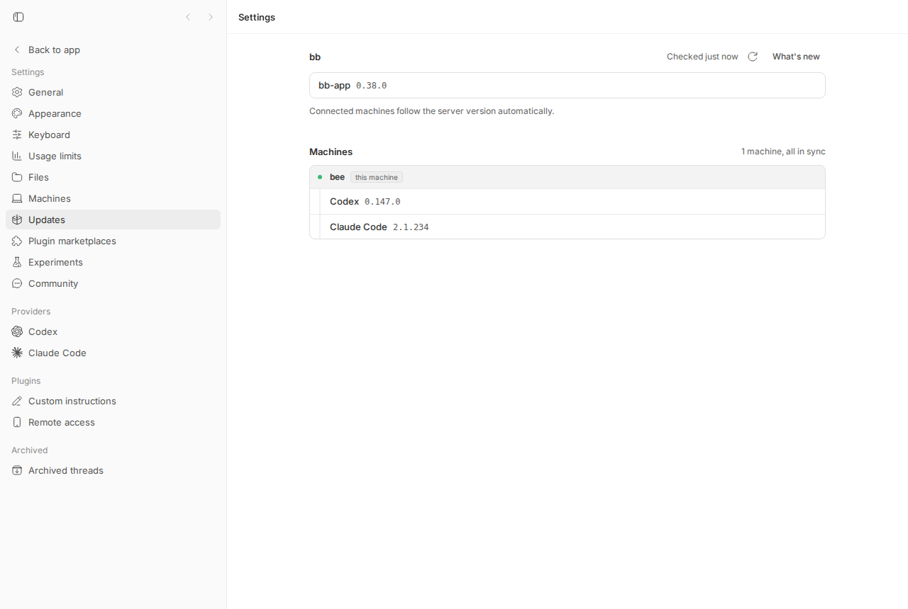

#1747 · npx install pins bb to one minor line, so the update button silently does nothing
TL;DR
The reporter installed bb with npx bb-app@latest, sat on 0.35.1 while 0.37.0 shipped, and concluded that npm had "hard-pinned" the npx cache to ^0.35.1.
That mechanism is wrong. npm's npx (implemented by the libnpmexec library, npm 7 through the npm 11.17 that ships with the reporter's Node 24.19) never consults the caret range in ~/.npm/_npx/<hash>/package.json; for a dist-tag spec such as @latest it re-fetches the packument (the registry's per-package metadata JSON) with preferOnline (network first, cache only as fallback) and reinstalls when the resolved tarball differs. I built the reporter's exact cache entry ("bb-app": "^0.35.1", tree at 0.35.1, _npx.packages: ["bb-app@latest"]) and re-ran npx bb-app@latest: it upgraded to 0.38.0.
What is real, and what the reporter's own evidence points to: the web/npx surface has no self-update path at all. The Updates page shows "0.35.1 → 0.38.0 Available" plus a Copy button for npx bb-app@latest; the running server cannot replace itself, so nothing in the UI can ever change the version, and nothing tells the user that the only way to update is to stop bb and re-run that command in a terminal. The reporter's cache entry still read "bb-app": "^0.35.1" when they diagnosed it, and Repro A/C show that any re-run of npx bb-app@latest (with default npm settings) rewrites that entry to the current latest — so the entry itself is evidence that npx was never re-run after 0.35.1 (or was run with prefer-offline/offline set, the one npm config that does pin; see Root cause 1). The version simply sat where the one-time install left it, which is exactly what "no self-update" looks like from the outside.
Related launcher defect, found while reproducing: if a user does re-run npx bb-app@latest while the old bb is still running, the new launcher prints ● bb is ready with the app URL, but its server/daemon children die with EADDRINUSE (port already in use) / "Lock file is already being held" in an endless restart loop and the URL keeps serving the old version (Repro C). That is a genuine bb bug (the health check accepts a foreign server; already tracked as #1558) and would make a manual update look silently ignored, but the reporter's unchanged ^0.35.1 entry means it is not what happened to them. The linked PR #1755 documents the refuted npm mechanism and should not merge.
Claims vs findings
| Claim (issue) | Status | Evidence |
|---|---|---|
npx materializes @latest as "bb-app": "^0.35.1" in ~/.npm/_npx/<hash>/package.json | Verified | Fresh npx bb-app@latest into an isolated cache wrote {"dependencies":{"bb-app":"^0.38.0"},"_npx":{"packages":["bb-app@latest"]}} (repro step 1). The shape is exactly as reported. |
"On subsequent runs npm checks whether the cached tree satisfies that range … 0.37.0 cannot satisfy ^0.35.1, so this install is permanently pinned" | Refuted | libnpmexec's missingFromTree never reads the root dependency range. For a tag spec it fetches the manifest with preferOnline: true and compares node.package.resolved to manifest._resolved. Empirically: cache entry pinned to ^0.35.1/0.35.1 → npx bb-app@latest logged http fetch GET 200 https://registry.npmjs.org/bb-app (cache revalidated) and installed 0.38.0 (repro 01). Same for tagless npx bb-app. Verified against libnpmexec 10.2.9 (npm 11.16.0, node 24.18.0 here) and diffed against 10.3.0 (npm 11.17.0 = Node 24.19.0, the reporter's version): the resolution logic is byte-identical. |
| "Use the update affordance in the bb UI → still running 0.35.1" | Verified (but not a bug in the reported sense) | On the web surface the bb-app row offers only "Available · npx bb-app@latest · Copy" (screenshot below); the header has a re-check button and "What's new". None of them can update the running process, by design (code comment: "the server can't replace itself, so the row surfaces the upgrade command instead of a fake update button"). Same in 0.35.1 (checked desktop-v0.35.1). |
| "No error is surfaced … no download/install/version-check log lines in server.*.log or host-daemon.*.log" | Verified | The server only logs npm-latest lookups on failure (app-version.ts warns). There is no self-update code path on the web surface, so there is nothing to log. If the user re-ran npx while the old bb was up, all the errors went to the second terminal (see repro 02) — nothing lands in the old instance's logs. |
~/.bb/install-cache only held the already-installed tarball | Verified / irrelevant | apps/server/src/services/install/bb-app-artifact.ts packs the running bb-app for distributing to enrolled daemons. It is not a self-update cache. |
hostNeedsUpdate only covers remote enrolled daemons | Verified | apps/app/src/lib/host-update-status.ts; unrelated to updating the server host. |
| "A web-surface install launched via npx has no self-update path at all" | Verified | No code in packages/bb-app, apps/server re-installs bb-app; desktop (apps/desktop) is the only auto-updater. |
Fix 1: "npm install --prefix <dir> bb-app@latest re-resolves latest on every invocation, so a restart is genuinely an update" | Misleading | Only re-running npm install re-resolves; restarting the installed binary does not. And npx bb-app@latest already re-resolves on every invocation (repro 01), so this buys nothing. |
| Fix 2: "Detect the pin and warn: compare running version against registry latest" | Partially exists | The UI/API check exists: GET /api/v1/system/version returns updateAvailable:true, latestVersion:"0.38.0" on my 0.35.1 instance and the Updates page shows 0.35.1 → 0.38.0 Available. There is no startup-time notice or log line (the reporter's actual ask); see Proposed fix item 3. |
Environment
- bb source:
16ceb3a54(main, 2026-08-18), worktree/home/sawyer/projects/bb/.claude/worktrees/wf_debcf606-e4a-2;pnpm install+turbo run buildgreen. - Packaged bb-app versions exercised from npm: 0.35.1 (reporter's version) and 0.38.0 (current
latest). Registry state at test time:latest = 0.38.0, 0.35.1 published 2026-08-04, 0.36.0 2026-08-08, 0.37.0 2026-08-12, 0.38.0 2026-08-15. - OS: Ubuntu 26.04 LTS, Linux 7.0.0-29-generic x86_64. Node v24.18.0, npm 11.16.0 (libnpmexec 10.2.9). Reporter: Ubuntu 22.04.5, Node v24.19.0 → npm 11.17.0 (libnpmexec ^10.3.0;
missingFromTreeidentical, verified by diff). - Isolated npm cache
/tmp/bb-1747-npx/npm-cache(vianpm_config_cache) so~/.npmwas never touched. Isolated bb data dir/tmp/bb-1747-npx/data, server port 49901, daemon port 49902,BB_TELEMETRY=false. The user's real bb on :38886 and~/.bbwere not used.
Minimal reproduction
A. The claimed "hard pin" does not happen (refutation)
Script: 1747/repro/01-npx-latest-re-resolves.sh · output: 01-output.txt
- Fresh
npx bb-app@latestinto an empty cache — inspect the cache entry (this is the shape the issue shows). - Downgrade the tree in place with
npm install --prefix <entry> bb-app@0.35.1. The entry now reads"bb-app": "^0.35.1", tree at 0.35.1,_npx.packages ["bb-app@latest"]— byte-for-byte the reporter's state. - Run
npx bb-app@latestagain. Expected per the issue: stays 0.35.1. Actual: revalidates the packument and installs 0.38.0.
$ bash 01-npx-latest-re-resolves.sh
== 1. fresh: npx bb-app@latest (writes the cache entry)
{
"dependencies": {
"bb-app": "^0.38.0"
},
"_npx": {
"packages": [
"bb-app@latest"
]
}
}
"version": "0.38.0",
== 2. simulate a cache created when latest was 0.35.1 (exactly the reporter's entry)
{
"dependencies": {
"bb-app": "^0.35.1"
},
"_npx": {
"packages": [
"bb-app@latest"
]
}
}
"version": "0.35.1",
== 3. run npx bb-app@latest again against that entry
npm http fetch GET 200 https://registry.npmjs.org/bb-app 100ms (cache revalidated)
npm http cache https://registry.npmjs.org/bb-app 2ms (cache hit)
{
"dependencies": {
"bb-app": "^0.38.0"
},
"_npx": {
"packages": [
"bb-app@latest"
]
}
}
"version": "0.38.0",
If step 3 shows 0.38.0 the 'hard pin' claim is refuted for this npm.
The tagless form the docs also use (npx bb-app, cache dir d6edfdd7b003dcb4) behaved the same: seeded at 0.35.1 → 0.38.0 after one run.
#!/usr/bin/env bash
# 01-npx-latest-re-resolves.sh
set -euo pipefail
export npm_config_cache=/tmp/bb-1747-npx/npm-cache npm_config_update_notifier=false
HASH=$(node -e 'console.log(require("crypto").createHash("sha512").update("bb-app@latest").digest("hex").slice(0,16))')
DIR="$npm_config_cache/_npx/$HASH"
mkdir -p /tmp/bb-1747-npx && cd /tmp/bb-1747-npx
echo "== 1. fresh: npx bb-app@latest (writes the cache entry)"
npx -y bb-app@latest help >/dev/null
cat "$DIR/package.json"; grep '"version"' "$DIR/node_modules/bb-app/package.json"
echo "== 2. simulate a cache created when latest was 0.35.1 (exactly the reporter's entry)"
npm install --prefix "$DIR" --no-audit --no-fund bb-app@0.35.1 >/dev/null 2>&1
cat "$DIR/package.json"; grep '"version"' "$DIR/node_modules/bb-app/package.json"
echo "== 3. run npx bb-app@latest again against that entry"
npx -y --loglevel=http bb-app@latest help > /tmp/bb-1747-npx/step3.log 2>&1; grep -E "http (fetch|cache) .*registry.npmjs.org/bb-app " /tmp/bb-1747-npx/step3.log
cat "$DIR/package.json"; grep '"version"' "$DIR/node_modules/bb-app/package.json"
echo "If step 3 shows 0.38.0 the 'hard pin' claim is refuted for this npm."
B. What the "update affordance" actually is (visual)
Start the packaged 0.35.1 from the npx cache entry on isolated ports and open Settings → Updates.
$ BB_TELEMETRY=false node /tmp/bb-1747-npx/npm-cache/_npx/614ebd23ff24de90/node_modules/bb-app/dist/bb-app.js \
--data-dir /tmp/bb-1747-npx/data --server-port 49901 --host-daemon-port 49902
$ curl -s http://127.0.0.1:49901/api/v1/system/version
{"currentVersion":"0.35.1","latestVersion":"0.38.0","source":"npm","updateAvailable":true,"isDevelopment":false,"upgradeCommand":"npx bb-app@latest"}

surface: "web"). The only bb-app affordances are the tinted "0.35.1 → 0.38.0 Available" row with the literal command npx bb-app@latest and a Copy button, plus the re-check icon and "What's new" in the header. There is no button that installs anything — the update-check works, the update itself is manual.C. Following the command while the old bb still runs → "bb is ready" but nothing changed (related launcher bug, #1558)
Script: 1747/repro/02-false-ready-while-old-bb-runs.sh · output: 02-output.txt · full second-terminal log: npx-latest-while-old-running.log
Prerequisites: run script 01 first (it creates the npx cache entry that this script downgrades to 0.35.1); ports 49901/49902 must be free (the script now checks and exits 2 otherwise); needs network access (~130 MB of bb-app tarballs) and about one minute (script 01 takes ~20 s, script 02 ~55 s).
- Old bb (0.35.1) is running on data dir
D, ports 49901/49902 (as in B). - In a second terminal, run exactly what the Updates page shows:
npx bb-app@latest(same data dir/ports). - Expected: either the new version replaces the old, or a hard failure ("port in use / another bb runs, stop it first") and exit. Actual: npx does download 0.38.0, the launcher warns "Another bb already runs on this data directory", then prints
✓ Server listening,✓ Host daemon running,● bb is readywith the app URL — and its own server child crashes withEADDRINUSE, the daemon child with "Lock file is already being held", both restarting forever (22 server restarts in ~45 s). The URL still serves 0.35.1.
$ bash 02-false-ready-while-old-bb-runs.sh
== 1. put 0.35.1 in the npx cache entry and start it (the 'old' bb)
{"currentVersion":"0.35.1","latestVersion":"0.38.0","source":"npm","updateAvailable":true,"isDevelopment":false,"upgradeCommand":"npx bb-app@latest"}
== 2. do what the Updates page tells you, in a second terminal, without stopping the old bb
1 ● bb is ready
1 ! Another bb already runs on this data directory
2 ! host daemon exited with code 1 - restarting host daemon
22 ! server exited with code 1 - restarting server
22 code: 'EADDRINUSE',
22 Error: listen EADDRINUSE: address already in use 127.0.0.1:49901
2 Error: Lock file is already being held
== 3. what the app URL actually serves
{"currentVersion":"0.35.1","latestVersion":"0.38.0","source":"npm","updateAvailable":true,"isDevelopment":false,"upgradeCommand":"npx bb-app@latest"}
"version": "0.38.0", <- the npx cache dir IS 0.38.0 now; the running bb is not
✓ Stopped bb (pid 1296862)
Head of the second terminal (verbatim, ANSI stripped):
bb
! Daemon lock exists - waiting or reclaiming if stale
lock: /tmp/bb-1747-npx/data/daemon.lock.lock
If startup fails, stop the other bb process or remove it.
! Another bb already runs on this data directory
record: /tmp/bb-1747-npx/data/bb-app-runtime.json
Run `bb-app stop` to stop it.
○ Starting server
✓ Server listening on http://127.0.0.1:49901
○ Starting host daemon
✓ Host daemon running
● bb is ready
app http://127.0.0.1:49901
daemon 49902
data /tmp/bb-1747-npx/data
db /tmp/bb-1747-npx/data/bb.db
logs /tmp/bb-1747-npx/data/logs/
lock /tmp/bb-1747-npx/data/daemon.lock
Press Ctrl+C to stop
[04:45:59] INFO: [server] Server listening {"bindHost":"127.0.0.1","port":49901,"dataDir":"/tmp/bb-1747-npx/data"}
node:events:487
throw er; // Unhandled 'error' event
^
Error: listen EADDRINUSE: address already in use 127.0.0.1:49901
...
! server exited with code 1 - restarting server
Error: Lock file is already being held
at file:///tmp/bb-1747-npx/npm-cache/_npx/614ebd23ff24de90/node_modules/bb-app/host-daemon/dist/daemon-bundle.mjs:476:11881
○ Restarting server
✓ Server restarted
! host daemon exited with code 1 - restarting host daemon
... (loops)
#!/usr/bin/env bash
# 02-false-ready-while-old-bb-runs.sh
set -euo pipefail
export npm_config_cache=/tmp/bb-1747-npx/npm-cache npm_config_update_notifier=false BB_TELEMETRY=false
HASH=$(node -e 'console.log(require("crypto").createHash("sha512").update("bb-app@latest").digest("hex").slice(0,16))')
DIR="$npm_config_cache/_npx/$HASH"
DATA=/tmp/bb-1747-npx/data; PORT=49901; DPORT=49902
mkdir -p "$DATA"
echo "== 1. put 0.35.1 in the npx cache entry and start it (the 'old' bb)"
npm install --prefix "$DIR" --no-audit --no-fund bb-app@0.35.1 >/dev/null 2>&1
node "$DIR/node_modules/bb-app/dist/bb-app.js" --data-dir "$DATA" --server-port $PORT --host-daemon-port $DPORT > /tmp/bb-1747-npx/old.log 2>&1 &
OLD=$!
until curl -sf http://127.0.0.1:$PORT/health >/dev/null; do sleep 1; done
curl -s http://127.0.0.1:$PORT/api/v1/system/version; echo
echo "== 2. do what the Updates page tells you, in a second terminal, without stopping the old bb"
timeout 45 npx -y bb-app@latest --data-dir "$DATA" --server-port $PORT --host-daemon-port $DPORT > /tmp/bb-1747-npx/new.log 2>&1 || true
tr '\r' '\n' < /tmp/bb-1747-npx/new.log | grep -E "already runs|bb is ready|EADDRINUSE|Lock file|restarting" | sort | uniq -c
echo "== 3. what the app URL actually serves"
curl -s http://127.0.0.1:$PORT/api/v1/system/version; echo
grep '"version"' "$DIR/node_modules/bb-app/package.json"
node "$DIR/node_modules/bb-app/dist/bb-app.js" stop --data-dir "$DATA" || kill $OLD
D. The correct sequence works
bb-app stop (or Ctrl+C) the old bb, then npx bb-app@latest: 0.38.0 starts and the Updates page is clean.
$ node .../bb-app.js stop --data-dir /tmp/bb-1747-npx/data
✓ Stopped bb (pid 1231124)
$ npx -y bb-app@latest --data-dir /tmp/bb-1747-npx/data --server-port 49901 --host-daemon-port 49902
... ● bb is ready
$ curl -s http://127.0.0.1:49901/api/v1/system/version
{"currentVersion":"0.38.0","latestVersion":"0.38.0","source":"npm","updateAvailable":false,"isDevelopment":false,"upgradeCommand":"npx bb-app@latest"}

npx bb-app@latest re-run — the row reads bb-app 0.38.0 with no "Available" tint. The "pin" never existed.Root cause
1. The npm mechanism in the issue is not how npx works
libnpmexec (npm's npx) decides whether the npx-cache tree is usable in missingFromTree. For a registry spec that is a tag (bb-app@latest) or a bare name in the npx tree, it takes the else-branch: fetch the manifest with preferOnline: true (registry revalidation), then compare the cached node's resolved tarball URL to manifest._resolved. The root package.json's "bb-app": "^0.35.1" is merely what Arborist wrote with save: true; it is never read for this decision. From the npm bundled with node 24 (libnpmexec/lib/index.js, identical in 10.2.9 and 10.3.0):
const getManifest = async (spec, flatOptions) => {
if (!manifests.has(spec.raw)) {
const manifest = await pacote.manifest(spec, { ...flatOptions, preferOnline: true, Arborist, _isRoot: true })
...
const missingFromTree = async ({ spec, tree, flatOptions, isNpxTree, shallow }) => {
const npxByNameOnly = isNpxTree && spec.name === spec.raw
if (spec.registry && spec.type !== 'tag' && !npxByNameOnly) {
... // version / range handling
} else {
// non-registry spec, or a specific tag, or name only in npx tree. Look up
// manifest and check resolved to see if it's in the tree.
const manifest = await getManifest(spec, flatOptions)
...
for (const node of nodesByManifest) {
if (node.package.resolved === manifest._resolved || node.realpath === manifest._resolved) {
return { node }
}
}
return { manifest } // => reify({ add: [manifest._id] }) — reify = Arborist's "write node_modules to disk" — installs the new version
}
}
Even the very first npx-cache implementation (libnpmexec 1.0.0, npm 7.0) compared child.version !== manifest.version with preferOnline. There is no npm version in the supported range where npx bb-app@latest is pinned by the caret. Repro A demonstrates it end to end.
One npm configuration that would pin: prefer-offline=true (or offline=true) in the user's npmrc. npm-registry-fetch's getCacheMode gives preferOffline precedence over libnpmexec's preferOnline ('force-cache' beats 'no-cache'), so the packument comes from cache forever. Verified: default run logs http fetch GET 200 …/bb-app (cache revalidated); with npm_config_prefer_offline=true it logs http cache …/bb-app (cache hit) and never touches the network. The reporter did not mention this setting; it is a hypothesis to check (npm config get prefer-offline offline and npm -v), not a finding. Either way — never re-ran npx, or re-ran with prefer-offline — the reporter's still-^0.35.1 cache entry is consistent; a default-config re-run would have rewritten it (Repro A step 3, Repro C step 3).
2. What bb actually does on the web surface
- app-version.ts#L9:
UPGRADE_COMMAND = "npx bb-app@latest"; L143-L172 computeupdateAvailablefrom the registry — this works (see B). - UpdatesSettingsSection.tsx#L242-L246 and #L358-L381: on non-desktop the row renders the command and a Copy button only. There is deliberately no update button. So "the update affordance does nothing" is true and intended; the missing piece is guidance that you must stop the running bb and re-run the command.
3. Related: the launcher lies about readiness when another bb owns the port (#1558)
This is not what happened to the reporter (their cache entry never moved off ^0.35.1, so npx was never re-run), but it is what any user who follows the Copy-button command without stopping bb first will hit, and it turns a manual update into a silent no-op.
launcher.ts#L2164-L2186 waitForHealth only checks that the child has not exited yet and that something answers GET serverUrl/health with 2xx:
async function waitForHealth(args: WaitForHealthArgs): Promise<void> {
...
while (Date.now() <= deadline) {
if (args.childProcess && (args.childProcess.exitCode !== null || args.childProcess.signalCode !== null)) {
throw new Error("Process exited before becoming healthy");
}
try {
const response = await fetch(args.url);
if (response.ok) { return; } // <- the OLD bb's /health ({"ok":true}) satisfies this
} catch {}
...
The old server answers /health in ~1 ms while the new child is still booting, so startFullStackServerProcess (#L2898-L2925) returns success. Likewise waitForHostDaemonStatus is satisfied by the old daemon on the same port because it reports the same hostId/serverUrl (same data dir). The launcher then prints "bb is ready" (#L3382). Moments later the child dies with EADDRINUSE, and superviseFullStackProcesses (#L3014-L3060) restarts it every second, each restart again "healthy" — an infinite loop.
The launcher does detect the situation up front: claimBbAppRuntimeFile (app-runtime-file.ts#L73-L98) returns false and the launcher prints "Another bb already runs on this data directory" (launcher.ts#L3285-L3297) — but continues, on the documented assumption that "this start is about to fail on the port anyway". It does not fail; it reports ready. That assumption is the defect. The same root cause is filed as #1558 (different symptom: enrolling against the wrong server).
Side hazard observed: npx replaced the files under _npx/<hash>/node_modules/bb-app while the 0.35.1 launcher was still running from that directory. The old process kept running from memory, but any child restart from then on would load 0.38.0 server/daemon code under a 0.35.1 launcher (mixed-version tree). Not exercised further.
Proposed fix (first principles)
- UI/docs (addresses what the reporter hit): on the web-surface Updates row, and in
packages/bb-app/README.md/README.md, say the two-step truth: "stop the running bb (Ctrl+C ornpx bb-app stop), then runnpx bb-app@latest". Optionally makeupgradeCommanda two-line snippet. Do not tell users npx cannot update. - Launcher (packages/bb-app/src/launcher.ts; fixes the related #1558 trap): make readiness prove that our child answered. Cheapest robust option: generate a per-launch nonce, pass it to the server child (env, e.g.
BB_SERVER_LAUNCH_TOKEN) and to the daemon, have/healthecho it (apps/server/src/server.ts#L331currently returns{ ok: true }), and havewaitForHealthrequire a matching token; keep polling only while the child is alive. Do the same for the daemon status probe (it already carries identity fields; add the launch token). Then the second launcher fails fast with a real error instead of "bb is ready". Also treatruntimeRecordOwned === falsewith a live pid as terminal: print "bb <old version> is already running (pid N) on <data dir>; runnpx bb-app stop(or Ctrl+C it) and re-run" and exit non-zero — that is the exact message the reporter needed. Cap the restart loop on immediate repeated exits (N consecutive exits within a few seconds) so a crash-looping child cannot masquerade as a running bb forever. Risk: the token requires bumping nothing on the wire between server and daemon (launcher-local env only), but the daemon status probe change touches host-daemon code — keep it launcher↔daemon-local; if the status payload shape changes, follow AGENTS.md and bumpHOST_DAEMON_PROTOCOL_VERSIONonly if that payload is part of the daemon↔server protocol (it is a local status endpoint; verify before bumping). - Optional visibility: log one info line at server start with
currentVersionvs registrylatest(the service already fetches it) so an 11-day drift is visible inserver.*.log.
PR review — #1755 "docs: warn that npx installs cannot self-update"
gh pr view 1755 · README.md +19/-0, docs only. Checked out (77a98c38f) in this worktree; prettier --check README.md passes; nothing to build or test. Returned to base afterwards.
What it changes: adds a README section "Long-running installs: use npm install, not npx" stating that npx bb-app@latest "cannot update itself", that the cache "pins to ^0.35.1 and will never resolve 0.36.0 or newer", and recommending npm install --prefix ~/.bb/runtime-install bb-app@latest then running ~/.bb/runtime-install/node_modules/.bin/bb-app, claiming "restarting is a real update".
Does it address the root cause? No. It documents a mechanism that does not exist (Repro A, libnpmexec source) and leaves the actual failure mode (second launcher reports ready while the old bb keeps serving; no "stop first" guidance) untouched.
| Finding | Severity | Where |
|---|---|---|
Central claim is false: npx re-resolves latest on every run (verified on npm 11.16 and by source diff on npm 11.17 = reporter's Node 24.19; true since npm 7). Shipping this in the README would misinform every reader and contradicts the product's own upgradeCommand = "npx bb-app@latest" (apps/server/src/services/system/app-version.ts#L9), which the PR does not touch — the app would keep telling users to run the command the README says cannot work. | Blocking | README.md L65-L72 (PR diff) |
"npm install re-resolves latest every time it runs, so restarting is a real update" — restarting the installed .bin/bb-app does not run npm install; only re-running the install command updates. The sentence teaches the wrong mental model. | Major | README.md L80-L81 |
Recommends installing the runtime into ~/.bb/runtime-install, i.e. inside bb's own data directory (~/.bb holds bb.db, logs, auth, install-cache). Mixing a 130 MB npm tree into the data dir is a poor default (backups, reset-bb-data, future data-dir tooling) and is not something the repo sanctions anywhere. | Minor | README.md L76-L78 |
| Missing the one instruction that matters: stop the running bb before re-running the install command. With or without npx, running a second launcher on the same data dir yields the false "bb is ready" (Repro C). | Major (omission) | — |
Nit: unverifiable "0.36.0 or newer" range language; and no > AGENT GENERATED footer, so presumably human-written — fine either way. | Nit | — |
Tests run: Repro A/C against the packaged 0.35.1/0.38.0 (the PR itself has no code). Verdict: CLOSE (or REQUEST CHANGES if the author wants to repurpose it into a correct "Updating an npx install: stop bb, then re-run npx bb-app@latest" note next to the existing npx bb-app stop docs in packages/bb-app/README.md).
Related issues
- #1558 — bb-app can enroll a host against the wrong server after its server child fails with EADDRINUSE. Same launcher defect as Repro C (health check satisfied by a foreign server); fixing #1558 properly fixes the "false ready" trap that a manual npx re-run falls into. It does not by itself address this issue's core (no self-update path / no "stop bb first" guidance).
- #1121 (closed) — daemon default-port collision handling when desktop runs on the same machine; adjacent port-collision UX.
- #1120 — npm 11 allow-scripts policy on fresh install; the same
npm warn allow-scripts esbuild …lines appeared during mynpm install --prefixsteps (unrelated to this issue's claim, but relevant to anyone following PR #1755's advice).
Appendix
Files
- 1747/repro/01-npx-latest-re-resolves.sh, 01-output.txt
- 1747/repro/02-false-ready-while-old-bb-runs.sh, 02-output.txt, npx-latest-while-old-running.log (raw, ~16 KB, includes every EADDRINUSE / lock stack)
- Screenshots: assets/1747-updates-page-0.35.1.png, assets/1747-updates-page-0.38.0.png (headless Chromium via dev-browser, 1280×860)
{kind=link}
{kind=link}
Registry facts at test time
$ npm view bb-app version dist-tags time --json (excerpt)
"version": "0.38.0"
"dist-tags": { "latest": "0.38.0", "nightly": "0.38.1-nightly.32020362329.1" }
"0.35.1": "2026-08-04T15:55:36.360Z" "0.36.0": "2026-08-08T01:28:13.734Z"
"0.37.0": "2026-08-12T01:50:16.780Z" "0.38.0": "2026-08-15T00:44:29.936Z"
"dist.unpackedSize": 132679973
npm / libnpmexec version mapping
node -v v24.18.0 (this machine) npm 11.16.0 libnpmexec 10.2.9 nodejs.org/dist/index.json: v24.19.0 (reporter) npm 11.17.0 ; npm view npm@11.17.0 dependencies.libnpmexec -> ^10.3.0 diff libnpmexec@10.3.0/lib/index.js <bundled 10.2.9> -> only the strict-allow-scripts preflight differs; missingFromTree identical npm view npm@7.24.2 / npm@8.19.4 dependencies.libnpmexec -> * / ^4.0.14 ; libnpmexec@1.0.0 manifest-missing.js: `return child.version !== manifest.version` (with preferOnline)
prefer-offline experiment
$ npx -y --loglevel=http bb-app@latest help 2>&1 | grep -i "http" npm http fetch GET 200 https://registry.npmjs.org/bb-app 206ms (cache revalidated) $ npm_config_prefer_offline=true npx -y --loglevel=http bb-app@latest help 2>&1 | grep -i "http" npm http cache https://registry.npmjs.org/bb-app 8ms (cache hit)
Commands run (chronological, abbreviated)
gh issue view 1747 -R get-bb/bb --json ... ; gh pr view 1755 ... ; gh pr diff 1755
pnpm install --frozen-lockfile --prefer-offline ; pnpm exec turbo run build --output-logs=errors-only (ok)
node -e 'sha512("bb-app@latest").slice(0,16)' -> 614ebd23ff24de90 ; ("bb-app") -> d6edfdd7b003dcb4
export npm_config_cache=/tmp/bb-1747-npx/npm-cache
npx -y bb-app@latest help ; cat _npx/614ebd23ff24de90/package.json
npm install --prefix _npx/614ebd23ff24de90 bb-app@0.35.1 ; npx -y bb-app@latest help (-> 0.38.0)
npm install --prefix _npx/d6edfdd7b003dcb4 bb-app@0.35.1 ; npx -y bb-app help (-> 0.38.0)
BB_TELEMETRY=false node _npx/614ebd23ff24de90/node_modules/bb-app/dist/bb-app.js --data-dir /tmp/bb-1747-npx/data --server-port 49901 --host-daemon-port 49902
curl http://127.0.0.1:49901/api/v1/system/version ; dev-browser --headless screenshot /settings/updates
npx -y bb-app@latest --data-dir ... --server-port 49901 --host-daemon-port 49902 (while old runs: "bb is ready" + EADDRINUSE loop)
node .../bb-app.js stop --data-dir /tmp/bb-1747-npx/data ; npx -y bb-app@latest ... (0.38.0) ; screenshot ; stop
gh pr checkout 1755 ; pnpm exec prettier --check README.md ; git checkout 16ceb3a54
git show desktop-v0.35.1:apps/app/src/components/settings/UpdatesSettingsSection.tsx | grep upgradeCommand (same Copy-only UI in 0.35.1)
Verification
An independent verifier re-ran both repro scripts verbatim (with /tmp/bb-1747-npx swapped for /tmp/bb-1747-verify) on node v24.18.0 / npm 11.16.0 with an isolated npm cache. Script 01 reproduced exactly: fresh entry ^0.38.0, downgraded to ^0.35.1, then npx bb-app@latest logged cache revalidated and installed 0.38.0 — the issue's "hard pin" claim is refuted. Script 02 reproduced count-for-count: 1× "bb is ready", 1× "Another bb already runs", 22× server restart / EADDRINUSE, 2× lock held, URL still serving 0.35.1 while the cache dir was 0.38.0. All code excerpts and line references were checked verbatim at 16ceb3a54 and in the bundled npm; Node 24.19.0 → npm 11.17.0 → libnpmexec ^10.3.0 confirmed; the desktop-v0.35.1 tag has the same Copy-only UI; no later commit on origin/main (511d7db64) touches launcher.ts, app-version.ts, UpdatesSettingsSection.tsx or the READMEs; PR #1755's diff and all five review findings were confirmed; both screenshots are real 1280×860 PNGs matching their captions.
Changes in this revision: (1) the TL;DR, root-cause section 3 and the one-line root cause no longer present the launcher false-ready loop as "the most plausible" explanation for the reporter — the reporter's own cache entry still read ^0.35.1, and Repro A/C show that any default-config npx re-run rewrites the entry, so the evidence-consistent explanation is simply "no self-update path + Copy-only UI, so nothing changed because npx was never re-run (or was run with prefer-offline)"; the false-ready loop is now framed as a related launcher defect (#1558) that bites anyone who re-runs without stopping bb. (2) Script 02 gained a prerequisite comment (run 01 first; ports 49901/49902 free; ~130 MB / ~1 min) plus a cache-entry and port-free check (the preamble was re-checked against the existing cache; the recorded output is unchanged). (3) "Fix 2" is now "Partially exists" (UI/API check exists; no startup log). (4) Glosses added for packument, libnpmexec, preferOnline, reify, EADDRINUSE.